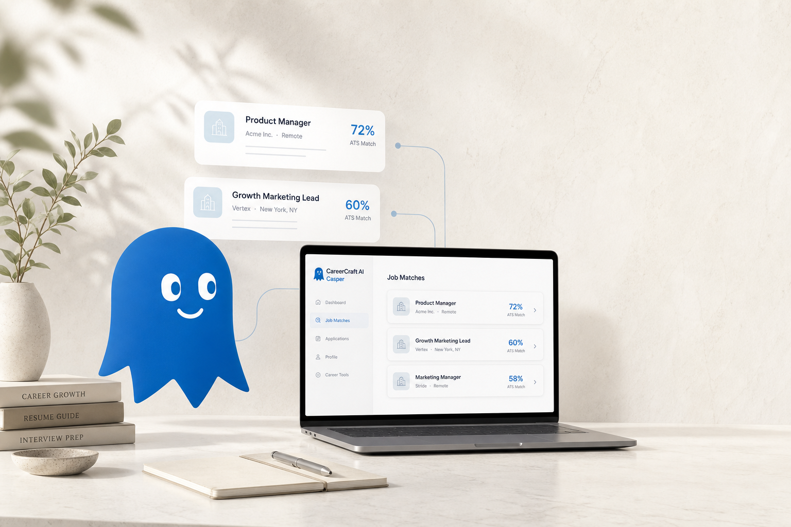
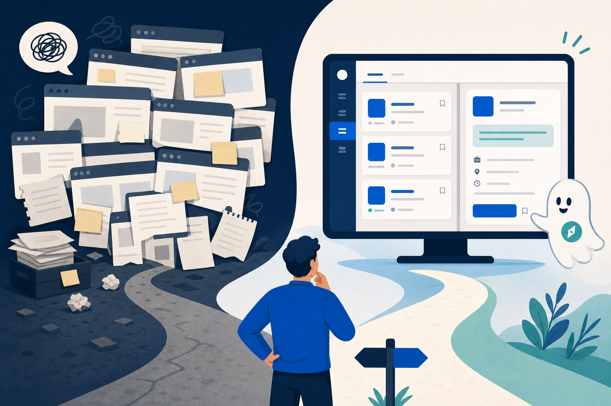
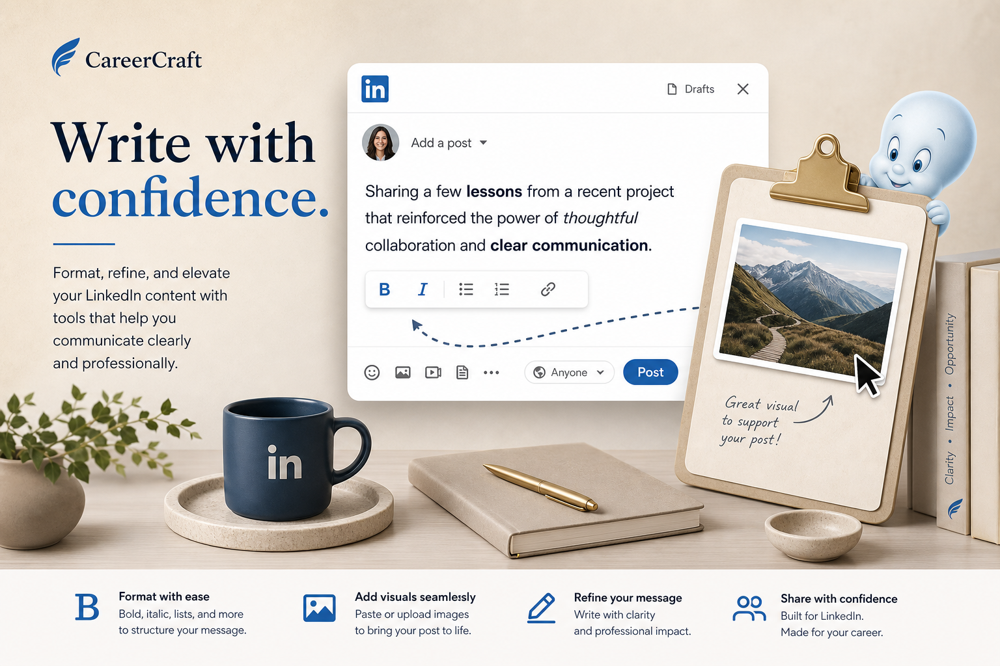
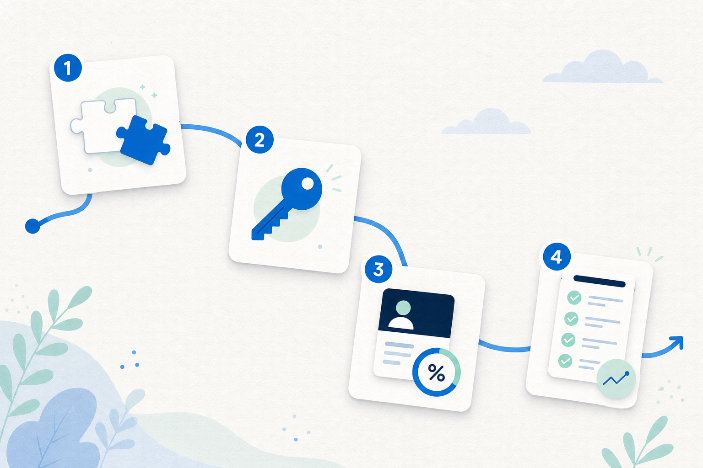
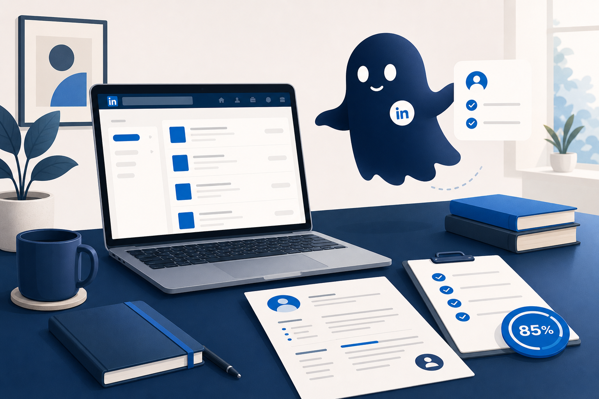

Without CareerCraft
- Job URLs lost in notes
- “Did I apply?” guessing
- No fit signal until after you apply
- Hiring posts scroll past
- AI that wants your keys on their servers
Casper · Jobs & Management
Know the fit before you apply.
ATS scores on LinkedIn job pages, a Job Tracker that remembers every lead, Casper AI on your feed, formatters, and alerts — with your API key on your machine.

The gap

Product
ATS scoring
Compatibility % on LinkedIn job pages — must-haves, skills, experience, keywords, strengths, and gaps — scored against your CV / profile.
Casper AI
Ghost icon on feed posts opens Casper with that post’s context — tone, hooks, reply angles — in a real chat box with history.
Job Tracker
Every viewed, scored, alerted, and feed-captured role in one local board.
New → Viewed → Applied → Interview → Confirmed / Rejected / Expired.
Fit % beside title and company.
ATS, alerts, feed, board, recency, date.
CSV export. Bulk select and delete.
Write tools
Unicode formatting and image paste — without leaving LinkedIn compose. Format with ease, add visuals, refine the message, share with confidence.

Bold, italic, lists, colors, case tools for LinkedIn posts.
The same craft for comments — sharper replies, less plain text.
Paste PNG/JPG screenshots straight into LinkedIn compose.
Hunt tools
Alerts, freshness, feed discovery, and saved-item filters — the parts of LinkedIn hunting that usually leak.
Up to 5 LinkedIn searches. Desktop notifications when counts rise — not every quiet check.
One-click Past hour on Jobs search and from the popup.
Right-rail shortlist from alerts, tracker, and feed candidates.
Extra filters on My Items: All / Posts / Images / Videos / Articles.
Capture a real post permalink from the LinkedIn menu into your board.
Keyword-gated hiring posts while you scroll — soft-add to Tracker.
Bring your own key
ATS and Casper call your provider. CareerCraft never sells tokens, never proxies prompts, never charges an AI seat.
Gallery
Slow auto-scroll · hover to pause · click to enlarge
Hands-on
From install to your first scored job — seven steps, all on your machine.
chrome://extensions → Developer mode → Load unpacked.
Capabilities
Live analysis on job pages vs your stored profile.
CV upload, paste, or auto-extract. Completeness meter.
Floating chat for posts, replies, and strategy.
Ghost on posts opens Casper with that post context.
Pipeline, favorites, filters, export, bulk delete.
Up to 5. Desktop alerts when counts rise.
Past-hour jobs from search and the popup.
Right-rail shortlist from alerts, tracker, feed.
Hiring posts → soft-add to Tracker.
Capture permalinks from the LinkedIn menu.
All / Posts / Images / Videos / Articles with counts.
Unicode bold, italic, lists, colors, case tools.
Same craft for LinkedIn comments.
Clipboard PNG/JPG into compose.
Gemini, OpenAI, OpenRouter, DeepSeek, Qwen.
Command center with pipeline counts and jumps.
Case study
Job hunting on LinkedIn meant five tabs, a notes app full of URLs, and no honest signal on fit until after the cover letter. Formatting posts fought Unicode. AI chat lived somewhere else — and wanted my keys on someone else’s server.
One extension that scores roles against my real profile, tracks every lead, catches hiring posts in the feed, and lets me write properly — without a CareerCraft cloud account.
CareerCraft with Casper. ATS on the job page. Job Tracker. Alerts that only fire when counts rise. Formatters. Bring-your-own-key AI. Built in the workshop for my own hunt first.
I am not selling CareerCraft tokens. The hard part was the local-first workflow, and locking that behind a subscription felt wrong. Open source means you can audit it, fork it, and keep the workshop going with a star or a tip if it saves you a week of guesswork.
Ideal fit
Daily roles, ATS before apply, last-hour freshness, quiet alerts.
Formatter + Casper for sharper posts and replies.
Feed discovery catches hiring posts search misses.
BYO key. Tracker and chats stay in the browser.
Not a LinkedIn Premium replacement. Not a bulk-apply bot. Not “we host your AI.”

Trust
About the maker
Product Marketing Specialist @ WPBakery · stubborn problem-solver · lifelong Harry Potter devotee
By day I help ship WordPress products. After hours I build local-first tools — CareerCraft, Porter, Aligner, and more. If this saves you time, a star or a coffee keeps the workshop lit.
Same workshop
Other local-first tools from the same maker — same preference for clear UX over dark patterns.
FAQ
Yes. Open source. You only pay your AI provider if you use ATS or Casper. Donations optional.
Chrome extension storage on your device. No CareerCraft key vault.
Yes. Connect OpenRouter and pick free or low-cost models. Or use Gemini / OpenAI / DeepSeek / Qwen with your own key.
No. Notifications fire when a saved search’s job count goes up — not on quiet checks.
Install via GitHub Releases (Load unpacked) today. Star the repo to follow a Store listing later.
No. It enhances pages you visit and flows you configure. Not bulk people scrape, not auto-apply.
Download the release, load it in Chrome, star the repo if it helps.